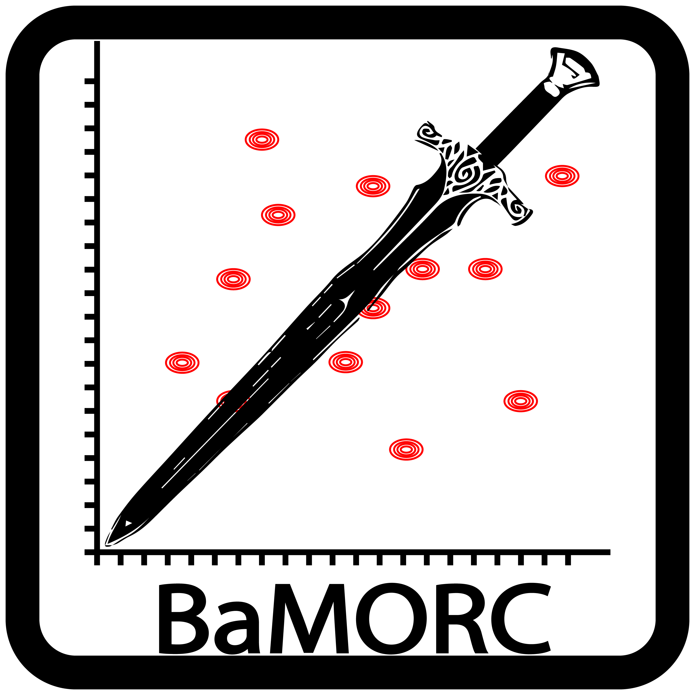
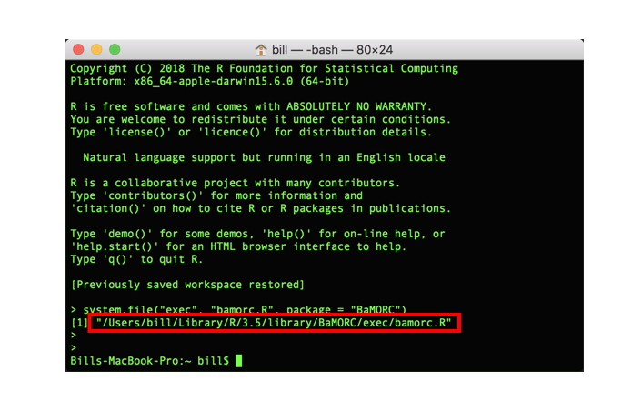

The BaMORC package is designed to facilitate protein NMR research with an easy-to-use tool that detects and corrects 13C referencing errors before and after the protein resonance assignment step.
Key features:
- Functions for data processing:
-
read_raw_file(), processing user-provided data file. -
read_NMRSTAR_file(), automatically process BMRB Star 2.0 and 3.0 files. -
read_DB_File(), automatically fetch BMRB data and output appropriate format via BMRB entry ID number.
-
Functions for calculating referencing correction value for assigned and unassigned carbon protein NMR spectra:
bamorc()andunassigned_bamorc().JPred secondary structure estimation wrapper:
jpred_fetcher().CLI functions for using shell.
BaMORC wouldn’t be possible without the hard work of the authors of RBMRB and jpredapi. Thanks!
Installation
The latest stable version can be installed from CRAN:
The latest development version can be installed from github:
# install.packages("devtools")
devtools::install_github('https://github.com/MoseleyBioinformaticsLab/BaMORC')Installing unassigned BaMORC dependencies:
To use unassigned protein NMR reference correction method, SSC (Variance informed DBSCAN for protein NMR spin system clustering.) docker image is required and user need to install docker and SSC docker image
Install Docker from here.
- Install SSC docker image after docker is installed by running following code:
Package usage:
For detailed usage tutorial please refer to Quick Start
CLI usage:
To use “BaMORC CLI”, you need to find the CLI run-script. Open terminal and type the following code:
> R -e 'system.file("exec", "bamorc.R", package = "BaMORC")'You will see the R script location print out in the terminal as shown in following image. 
And to test the R CLI script using the following pattern.
> <path to the R ClI scirpt>/bamorc.R -hIn my example code, it should be like:
> /Users/bill/Library/R/3.5/library/BaMORC/exec/bamorc.R -hFor detailed documation please refere to CLI guide